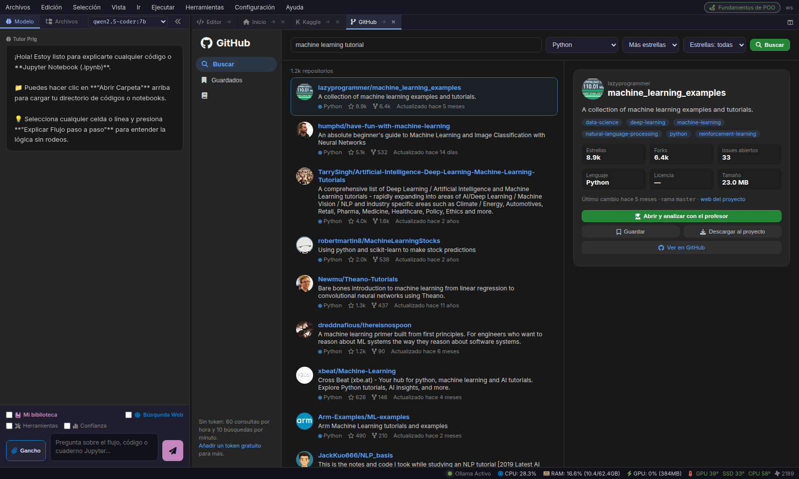
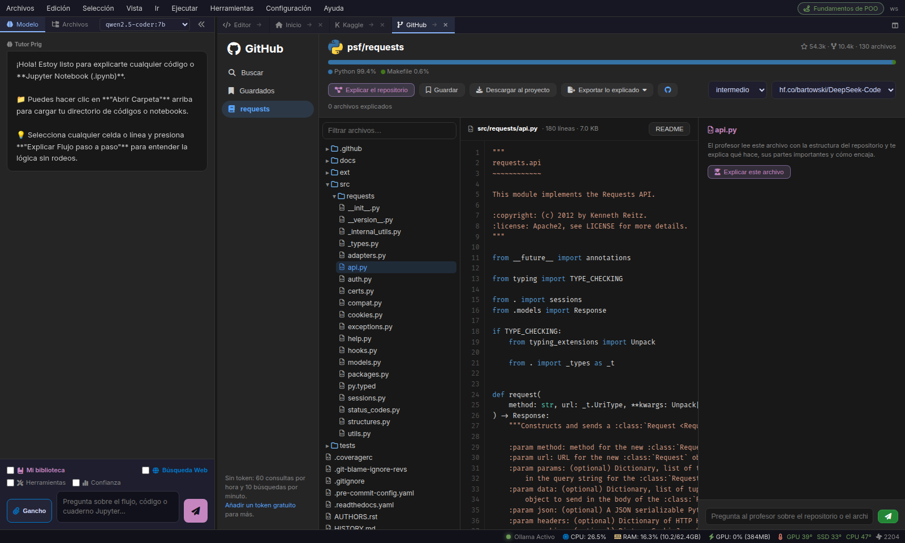

Prig GitHub Hub permite explorar el árbol de código completo de cualquier proyecto open-source, renderizar el README, analizar la arquitectura de software con el Director IA 7B y exportar compendios de "Código Explicado" en Markdown o PDF.
model.py encapsula FlashAttention y RoPE embeddings sin dependencias pesadas."
Diseñado para estudiar bases de código complejas, auditar dependencias y aprender de los mejores repositorios del mundo.
Navega por la jerarquía de directorios, abre cualquier archivo y lee el README con sintaxis enriquecida sin ocupar gigabytes en tu disco duro.
REMOTE TREE VIEWER
El Director IA 7B resume el propósito del repositorio, identifica los puntos de entrada clave (main.py, index.ts, Cargo.toml) y explica funciones complejas.
Genera compendios en PDF o Markdown con el código fuente del repositorio y las explicaciones didácticas de la IA integradas debajo de cada bloque.
PDF / MD EXPORTERFiltra por estrellas, forks, fecha de última actualización, lenguaje de programación y tópicos específicos directamente desde la barra de Prig.
GITHUB SEARCH APILas consultas de metadatos se guardan localmente para garantizar velocidad instantánea y evitar consumir los límites de la API de GitHub.
SMART DISK CACHE
¿Quieres trabajar en el repositorio? Descárgalo descomprimido directamente en <proyecto>/github_repos/ y comienza a editar en el Editor Prig.
Cómo el Director IA descompone el código open-source en explicaciones asimilables.
En lugar de abrumarte con miles de líneas, Prig prioriza los archivos neurálgicos del proyecto y crea un mapa mental de dependencias y flujos de ejecución.
Puedes hacer preguntas específicas al Cerebro IA sobre patrones de diseño, algoritmos de concurrencia o APIs utilizadas en el código.
vllm-project/vllmvllm/engine/async_llm_engine.pyHaz clic en cualquier imagen para ampliarla con el visor Lightbox.

Búsqueda instantánea conectada a la API de GitHub con filtros por estrellas, forks, lenguajes y temas.

Inspección de código fuente, visualización de README y auditoría didáctica asistida por el Director IA 7B.